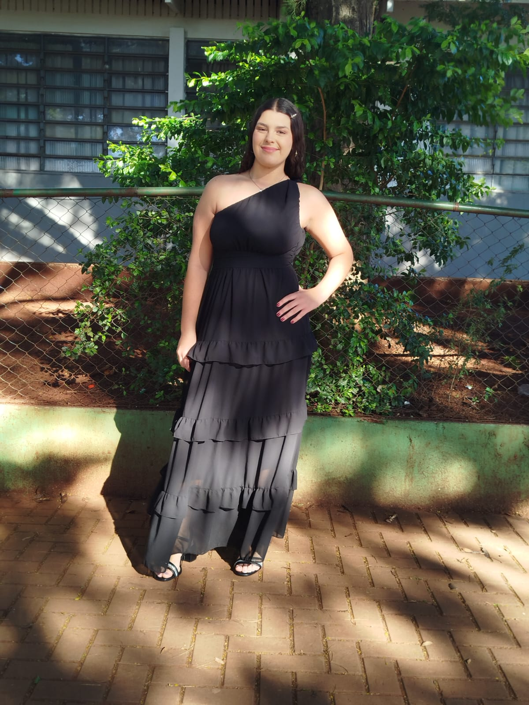
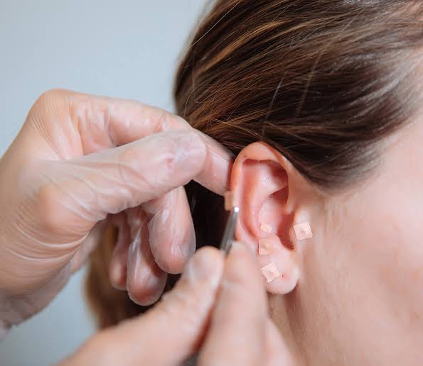
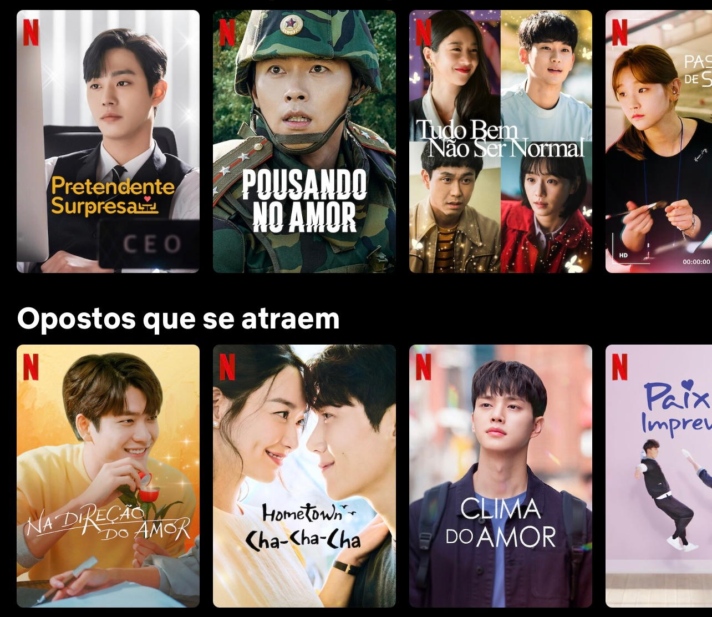
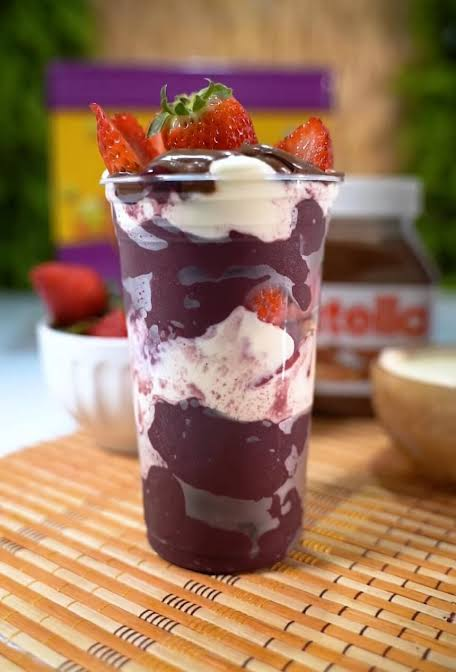
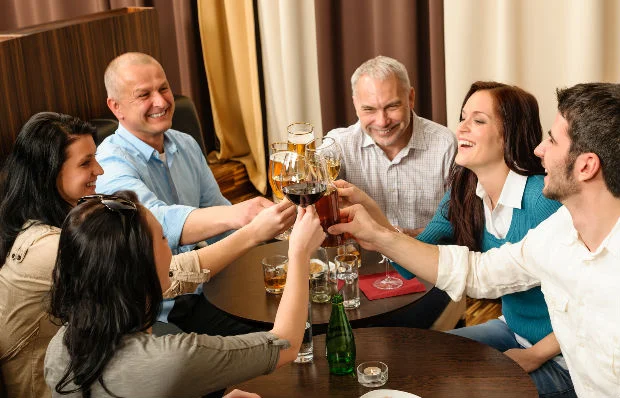
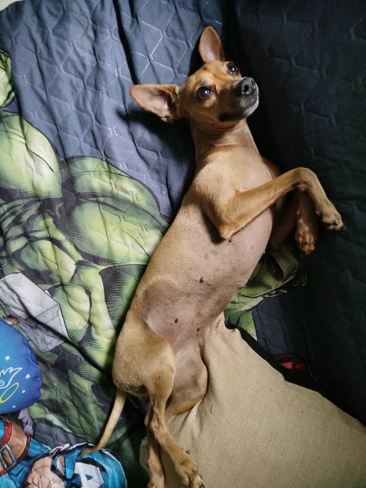

Sobre a
Nicoly
Olá! Meu nome é Nicoly, tenho 17 anos e vou contar um pouco sobre mim. Moro em Sarandi com meus pais e meus irmãos, e tenho dois pets. Atualmente, estou no último ano do Ensino Médio e também curso Técnico em Desenvolvimento de Sistemas. Comecei minha trajetória de aprendizado na PROMEC aos 15 anos. Após dois anos de dedicação e de adquirir diversos conhecimentos, tive a oportunidade de participar de uma entrevista e conquistar uma vaga na Unicive. Fui muito bem recebida pela equipe e, atualmente, faço parte do setor CGJS (Centro de Gestão Jurídica e Segurança), onde tenho a oportunidade de aprender, desenvolver minhas habilidades e adquirir novas experiências profissionais. Sou uma pessoa que busca aprender coisas novas, crescer profissionalmente e aproveitar as oportunidades que surgem ao longo do caminho. Acredito que cada experiência contribui para o meu desenvolvimento pessoal e profissional. Após concluir o Ensino Médio, pretendo ingressar em uma faculdade, mas ainda estou em dúvida entre os cursos de Marketing e Design Gráfico, pois são áreas que despertam meu interesse. Estou animada com as possibilidades para o meu futuro e quero continuar aprendendo, evoluindo e construindo uma carreira da qual eu possa me orgulhar.
Hobbies
Vôlei
Cozinhar

Dançar
Curiosidades

Tenho 10 pontos na orelha

Amo assistir séries coreanas

Não gosto de açaí
Lugares que quero conhecer

Coreia do Sul

Foz do Iguaçu
Salvador
Habilidades

Utilizar o Canva

Socializar
Fazer designs no computador
Pets

Pipoca

Billy